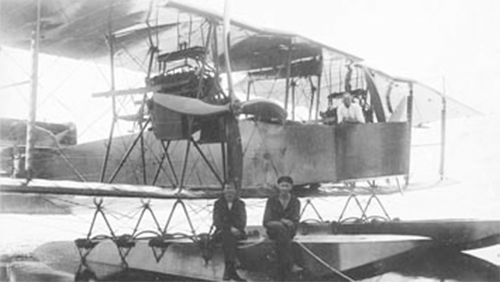

ГАСН

- Разработчик: Григорович, Щетинин
- Страна: Россия
- Первый полет: 1917
- Тип: Бомбардировщик-торпедоносец
В конце 1916 г. в товариществе Щетинина и Григоровича началась постройка самолета ГАСН (Гидро-Аэроплан Специального Назначения)
с торпедной установкой, спроектированной на заводе "Новый Лесснер" в Петрограде. Использовалось и обозначение "СОН" -
самолет особого назначения. В любом случае предполагалось создать самолет, способный выполнять функции морского торпедоносца.
Согласно данных В.Б. Шаврова соавтором проекта ГАСН следует считать М.М. Шишмарева (в начале 1920-х находился на ГАЗ № 1 в Москве
, где по его проекту построили разведчик Р-Ш), заведующего конструкторским бюро на заводе Щетинина.
ГАСН представлял собой крупный двухмоторный поплавковый трехстоечный биплан, способный нести 450 кг торпеду. Двигатели
"Роллс Ройс" 250 л.с. или "Рено" 220 л.с. Фюзеляж с фанерной обшивкой, хвостовое оперение бипланного типа. Экипаж 3 - 4
человека с двумя воздушными стрелками для обороны передней и задней полусфер.
Еще до завершения сборки первого опытного образца ПРТВ получило заказ на 10 таких аппаратов, что показывало высокую заинтересованность
Морского ведомства в таких самолетах.
Первый вылет состоялся 24 августа 1917 г. в Петрограде под управлением ст. лейтенанта А.Е. Грузинова. Наряду с хорошей
мореходностью и управляемостью на воде, выяснилась необходимость улучшения центровки и повышения эффективности рулей.
В сентябре, при проведении полетов, сломался один поплавок. Самолет починили и снова испытали в полете. Дальнейшая
доводка ГАСН. в связи с революционным хаосом и неразберихой, оказалась невозможной и к работам над торпедоносцем
удалось вернутся лишь в 1920 г.
В ноябре означенного года ГАСН отремонтировали и летчик Л.И. Гикса приступил к его испытаниям. Первый полет завершился
посад-кой в море из-за остановки двигателя. В течение суток самолет дрейфовал, после чего вмерз в лед в трех километрах
от берега. С повреждениями ГАСН эвакуировали в надежде на продолжение летных экспериментов. Продолжения, однако, не
последовало и история торпедоносца на этом закончилась.
| Летно технические характеристики | |
|---|---|
| Модификация | ГАСН |
| Размах крыла, м | 28.00 |
| Длина, м | 14.50 |
| Высота, м | |
| Площадь крыла, м2 | 150.00 |
| Масса, кг | |
| - пустого самолета | |
| - нормальная взлетная | |
| Тип двигателя | 2 ПД Rolls-Royce |
| Мощность, л.с. | 2 х 250 |
| Максимальная скорость , км/ч | 120 |
| Крейсерская скорость , км/ч | 100 |
| Скороподъемность, м/мин | |
| Продолжительность полета, ч | 7 |
| Практическая дальность, км/td> | Практический потолок, м |
| Экипаж, чел | 3-4 |
| Вооружение: | один-два пулемета, одна торпеда или до 480 кг бомб |